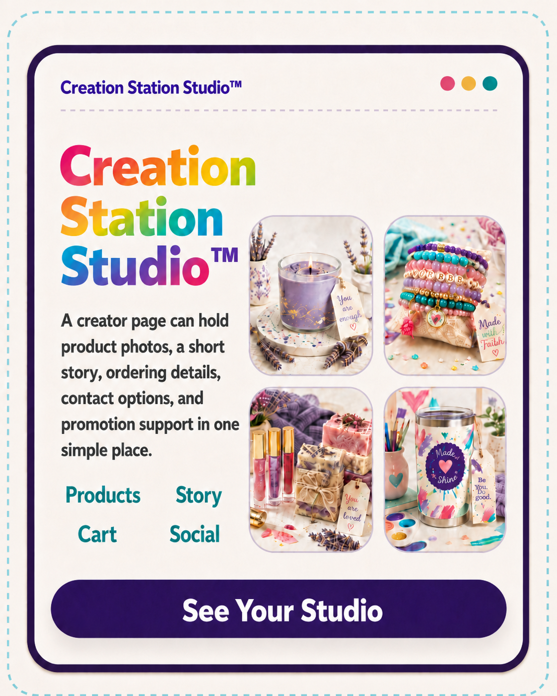

The main family experience
Parents & Young Creators
Give your child a guided place to plan, make, document, reflect, and finish—while you retain visibility and control.
- Ages 6–12 and 13–17
- Hands-on project guidance
- Private progress and portfolio
Now in Beta — for busy parents raising kids in the real world
Creation Station gives their creativity direction—without requiring you to plan every activity, explain every step, or hover over every half-finished project.
Every project is built to strengthen problem-solving, follow-through, reflection, critical thinking, real-life application, and work a child can actually be proud to finish.
Creative projects with real-life purpose and application.

Sign up to see the real path.First, tell us who you are here for
The main Creation Station experience is built for parents and young creators. Adult Makers and live online sessions have their own clear routes.
The main family experience
Give your child a guided place to plan, make, document, reflect, and finish—while you retain visibility and control.
Creation Station Club
A weekly creative gathering where children can make, talk, laugh, share, and brainstorm together.
Sign up to testAdult Makers & Crafters
Skip the child and teen journey. Choose a personal Studio page or a separate Marketplace application.
Jump to the adult choicesBuilt for the life parents actually live
You should not have to sit beside every bead, sketch, batch of slime, or half-finished project just to keep it moving. Creation Station provides the prompts, stages, and visible next steps.
Your child gets useful direction. You get room to handle dinner, work, errands, appointments, siblings, and everything else.
The value underneath the creativity
A finished candle, bracelet, drawing, or build is only the visible part. The deeper value is what children practice while moving an idea from “I want to make this” to “I finished it, and I can explain how.”
Practice handling frustration, making choices, reflecting honestly, asking for help, and recognizing growth.
Break a big idea into manageable stages, gather what is needed, keep going, and finish with intention.
Notice what is not working, consider options, make adjustments, and explain why a decision was made.
Build age-appropriate awareness of supplies, costs, inventory, pricing, presentation, communication, and responsibility.
Photograph work, describe a process, share the story behind a creation, and present finished work clearly.
See progress, understand the next step, take responsibility for the work, and feel proud of a real result.
One clear, interactive experience
The dashboard turns one big creative idea into visible stages. Children can see where they are, what comes next, and what they have already completed. Parents can see the structure and retain control over anything that could become public.
Visible progress for Young and Teen Creators
Their private portfolio is more than a gallery. It is a working record of ideas, decisions, effort, finished work, and reflection—kept under parent or guardian control.
Creation Station Example
A creator page can organize real product photos, simple descriptions, contact options, and a clear cart-style layout in one place. A finished page would use the creator’s own photos, product names, story, and ordering details. This is the same kind of personal creator website and business tools that come with a Creation Station membership—a real place to showcase, share, and learn how to sell what they make. Creation Station teaches the skills and provides the tools; no income or sales are guaranteed.


Hand-poured lavender candle with a calming floral scent.
$16
Colorful beaded bracelets with uplifting words and charms.
$12
Glossy lip color and handmade soap for a bright self-care set.
$14
A bright, reusable tumbler made to carry creativity everywhere.
$18For Adult Makers and Crafters
Adults do not use the child and teen portfolio. Choose a paid personal Studio page, apply separately to the free Rebel Ranch Marketplace, or leave without choosing either.
Paid personal landing page
Create a colorful standalone home for your story, products or services, ordering information, contact choices, and social links.
Sign Up to TestFree application and approval
Already have a page—or only need local discovery? Apply for a free Marketplace listing. Creation Station membership is not required and never guarantees approval.
Explore the Free MarketplaceReady when you are
We're testing this with real families now. Sign up and we'll reach out about early access.